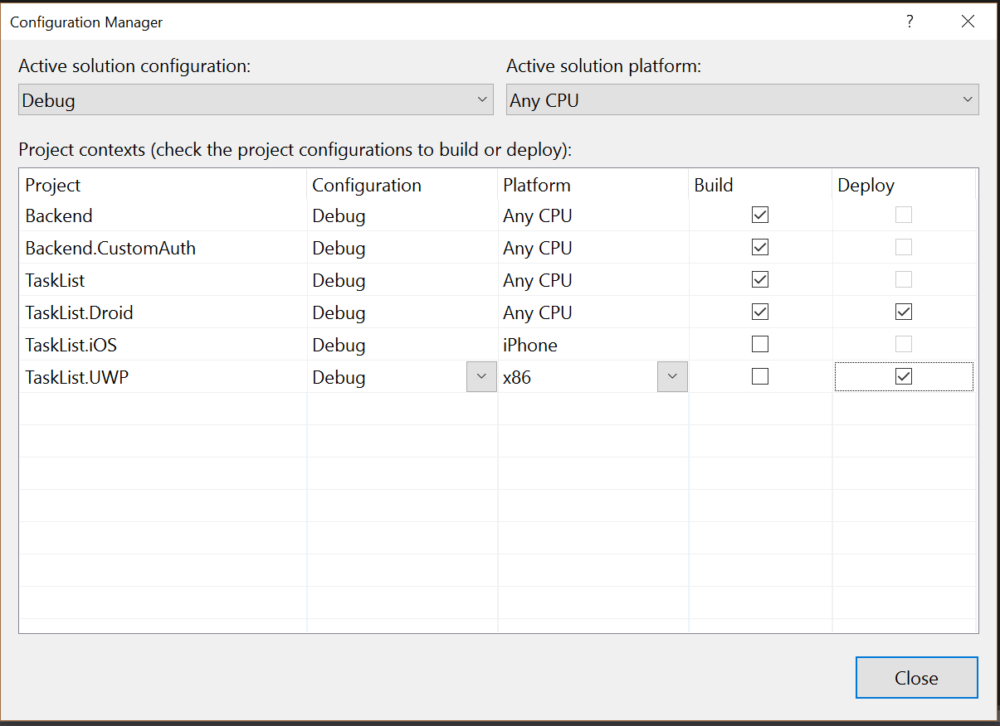

Xamarin Forms Tips¶
Over the many months I have spent coding Xamarin Forms, a number of people from the community and the Xamarin team have given me little tips to improve my Xamarin Forms code. I hope you find them as useful as I did.
Improve your ListView performance¶
It should be no surprise that performance matters. Little things like smooth scrolling and fast load times are a must. A lot of improvement can be gained by the techniques we have shown in this book since most of the perceived delays are caused by the back end loading times.
Eventually, a lot of apps generate a list. The normal way for implementing
this is with a ListView that has an ObservableCollection You load your
data into the ObservableCollection and then update that whenever the data
changes. That, in turn, updates the ListView.
There are two problems that are inherent here. The first is in the ObservableCollection and the second is in the ListView. Let's tackle the ObservableCollection first.
The problem with the ObservableCollection is that it's very hard to update. What normally ends up happening is code like this:
// Earlier in the code
var listContents = new ObservableCollection<Model>();
// When updating the code
var items = await table.ReadAllItemsAsync();
listContents.Clear();
for (var item in items) {
listContents.Add(item);
}
The point of the ObservableCollection is that it emits an event whenever the list changes. In the case where the table has thousands of entries, thousands of events will cause thousands of redraws, causing a major slow down in your code that you probably won't know until you have a large enough data set to note the problem.
Fortunately, one of the top Xamarin Evangelists, James Montemagno, has created a set of helper classes that assist with this sort of problem. The solution to this problem is to use the ObservableRangeCollection, like this:
// Earlier in the code
var listContents = new ObservableRangeCollection<Model>();
// When updating the code
var items = await table.ReadAllItemsAsync();
listContents.ReplaceRange(items);
With this code, Xamarin Forms gets notified once instead of thousands of times. There are actually several versions of this same behavior in the NuGet repository.
As to the second problem. A ListView with thousands of items will not be
showing all the items at once. A ListView will update all the items that have
been updated, irrespective of whether they are visible or not. The answer is
to use a caching strategy. There are two potential caching strategies. with
RetainElement, the ListView will generate a cell for each item in the list.
This is the default, but it's really only good for certain situations (most
notably when the cell has a large number of bindings). For almost all situations,
the RecycleElement caching strategy should be used. In this caching strategy,
the ListView will minimize the memory foot print and execution speed by only
updating cells when they are in the viewable area. This is good pretty much
all the time, but explicitly when the cell has a small number of bindings or
when each cell in the list has the same template. All data about the cell must
come from the binding context when using the RecycleElement caching strategy.
You can set the caching strategy right in the XAML:
<ListView CachingStrategy="RecycleElement" ...>
Alternatively, if you are creating a ListView in code, you can specify the caching strategy in the constructor:
var listView = new ListView(ListViewCachingStrategy.RecycleElement);
There are more techniques for improving ListView performance in the Xamarin documentation
Building a Floating Action Button¶
One of the things that I wanted to do to my apps was to give them a little more in the way of normal UI design. My original design (which I introduced back in [Chapter ][ch1]) had teal buttons at the bottom of the page. These buttons scrolled off the page when there were more items on the page than could reasonably be fit on the page. To fix this, I wanted to create a button that was always relative to the viewport.
There are two steps to this. Firstly, you need to convert the layout to a RelativeLayout.
For instance, my new ListView.xaml file:
<?xml version="1.0" encoding="utf-8" ?>
<ContentPage x:Class="TaskList.Pages.TaskList"
xmlns="http://xamarin.com/schemas/2014/forms"
xmlns:x="http://schemas.microsoft.com/winfx/2009/xaml"
Title="{Binding Title}">
<ContentPage.Content>
<RelativeLayout>
<StackLayout RelativeLayout.HeightConstraint="{ConstraintExpression Type=RelativeToParent, Property=Height, Factor=1}"
RelativeLayout.WidthConstraint="{ConstraintExpression Type=RelativeToParent, Property=Width, Factor=1}">
The original StackLayout layout renderer is placed inside the newly added RelativeLayout.
The height and width constraints tell the StackLayout to consume the whole screen.
At the bottom of the page, I can add my button:
</StackLayout>
<!-- The Floating Button -->
<Button BackgroundColor="Teal"
Command="{Binding AddNewItemCommand}"
RelativeLayout.XConstraint="{ConstraintExpression Type=RelativeToParent,
Property=Width,
Factor=1,
Constant=-60}"
RelativeLayout.YConstraint="{ConstraintExpression Type=RelativeToParent,
Property=Height,
Factor=1,
Constant=-60}"
Text="+"
TextColor="White" />
</RelativeLayout>
</ContentPage.Content>
</ContentPage>
The StackLayout is the end of the StackLayout I introduced in the previous listing. Now
I can add a button (or any other View type control, including a custom control that I may
have downloaded from NuGet or the Xamarin Plugins site) as well. The button will float
above the other content since it is added later. The constraints in this case provide
the location of the button.
There is more work to do. For instance, you cannot click on the thing behind the button - the button always receives the click, which will (in this case) initiate the addition of a new item. A custom control will allow you to provide iconography for the button, handle situations where you want to scroll behind and provide for the circular styling of the button which seems to be in-vogue right now.
If you want to place commands that are not normally used, you may want to consider the ToolbarItem area of the ContentPage. Here is a snippet:
<ContentPage.ToolbarItems>
<ToolbarItem Name="Refresh"
Command="{Binding RefreshCommand}"
Icon="refresh.png"
Order="Primary"
Priority="0" />
</ContentPage.ToolbarItems>
On Universal Windows (where this is actually important due to a lack of "pull-to-refresh" logic), you will see the familiar triple-dot on the app bar - clicking on the triple dot gives you access to the refresh command.
Installing NuGet Packages in Multiple Projects¶
One of the common requirements we have in Xamarin Forms is to install NuGet packages in all the Xamarin Forms projects. To do this, right-click on the solution and select Manage NuGet Packages for Solution.... When you install a package here, you can select which projects it should be applied to, allowing you to install a package once across all the dependent projects.
Auto-Deploy Universal Windows Apps¶
One of the more annoying things is that you have to Deploy the Universal Windows app. This gets in the way of the build process. I like to build then run. Having the extra Deploy step in there might not seem like much until you find yourself deploying several times an hour.
Fortunately, there is a simple fix for this. Set up the Configuration Manager to automatically deploy the right libraries on every successful build. To do this:
- In Visual Studio, select Build -> Configuration Manager...
- Check the boxes you can under Deploy

- Click on Close
This setting is saved within the solution, so you only need to do it once per project.